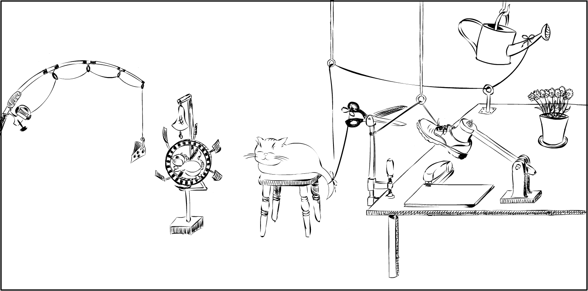

<!DOCTYPE html>
<html>
  <head>
    <title>Demo Exp</title>
    <script src="jspsych/jspsych.js"></script>
    <script src="jspsych/plugin-html-button-response.js"></script>
    <script src="jspsych/plugin-survey-multi-choice.js"></script>
    <script src="jspsych/plugin-survey-likert.js"></script>
    <script src="jspsych/plugin-html-slider-response.js"></script>
	<script src="jspsych/plugin-image-keyboard-response.js"></script>
	<script src="jspsych/plugin-html-keyboard-response.js"></script>
    <script src="jspsych/plugin-preload.js"></script>
    <script src="jspsych/plugin-survey-text.js"></script>
    <link href="jspsych/jspsych.css" rel="stylesheet" type="text/css" />
  </head>
  <body></body>
  <script>
  
// run study with ?demo=true at the end of url to have the demo mode


var jsPsych = initJsPsych({
  experiment_width: 1000,
  on_finish: function(){
    window.location = "https://app.prolific.co/submissions/complete?cc=136BDB5F"
  }
});


//var condition = CONDITION; 
var condition;

jsPsych.data.addProperties({condition: condition});

var subj_code;

function makeid(length) {
    var result           = '';
    var characters       = 'ABCDEFGHIJKLMNOPQRSTUVWXYZabcdefghijklmnopqrstuvwxyz0123456789';
    var charactersLength = characters.length;
    for ( var i = 0; i < length; i++ ) {
      result += characters.charAt(Math.floor(Math.random() * 
 charactersLength));
   }
   return result;
}

subj_code = makeid(12);

console.log(subj_code);

jsPsych.data.addProperties({subj_code: subj_code});


/* create timeline */
var timeline = [];

/* preload images */
var preload = {
  type: jsPsychPreload,
  images: ['img/uni_org_color_li.png']
}
timeline.push(preload);

var styles = `
  p {
    text-align: justify
  }
  
`
var styleSheet = document.createElement("style")
styleSheet.type = "text/css"
styleSheet.innerText = styles
document.head.appendChild(styleSheet)


//////////////////////// images in the different conditions

console.log(condition)

var office_config; 

//////////////////////////////////////////////////////
/* Condition selection (just for offline demo) */

var select = {
  type: jsPsychSurveyText,
  questions: [
    {
		prompt: 
		`
    <p><b>This is a Demo version of the experiment.</b></p>
		<p><b>Select a condition: type in a number between 1 (stapling) and 2 (watering).</b></p>
		`, 
		placeholder: 'number between 1 and 2',
		required: true,
		name: 'CondSel',
	},
  ],
	on_finish: function(data){
	condition = data.response.CondSel,
	console.log(condition);
	} 
}
//timeline.push(select);


//////////////////////////////////////////////////////
/* Instructions ( all conditions)  */
var cond_selected = {
    type: jsPsychHtmlButtonResponse,
    stimulus: function () {
    return "You chose to see Condition "+condition;
		},
    choices: ['Continue']
};
timeline.push(select, cond_selected);


//////////////////////////////////////////////////////
/* Confirmations */
var confs = {
  type: jsPsychSurveyMultiChoice,
  questions: [
    {
      prompt: "This study works properly only on Desktop PCs and Laptops, and not on Smartphones or Tablets. Before you proceed, please confirm that you take part via Desktop PC or Laptop.", 
      name: 'DesktopConf', 
      options: ['1: I confirm', '2: I do not confirm'], 
      required: true
    }, 
    {
      prompt: "For the scientific utility of the results, it is very important that you provide complete and careful responses. How seriously will you take your participation in the study?", 
      name: 'AttentConf', 
      options: ['1: I will take it seriously', '2: I will not take it seriously'], 
      required: true
    }, 
  ],
  on_finish: function(data){
    	  jsPsych.data.addProperties({desktop_conf: data.response.DesktopConf, attent_conf: data.response.AttentConf});
  },
  preamble: `
              <p></img></p>
              <p><b>Welcome to this experiment and thank you very much for your participation.</b></p>
              <p>Please note: This study contains memory checks with which we aim to ensure that you correctly understood the central aspects of the study.</p>
            `
};
timeline.push(confs);


//////////////////
/* instr 1 */ 
var instruction = {
    type: jsPsychHtmlButtonResponse,
    stimulus: function () {
      return `
        <p><b><i>Please read the following instruction:</i></b></p>        
        
        <p>In this study, we investigate how people reason about causal mechanisms.
          On the following screen we will show you a drawing that will show a static snapshot of a dynamic situation that is about to unfold. 
          Your task will be to first study the scene and then decide what the outcome of that situation will be. 
          Then, on a subsequent scene, we'd like you to write a short description of the different steps in the situation that lead to this outcome. 
          We want you to write this text based on your intuitive understanding of the depicted scene.</p>

        <p>In the text you'll write, please be as concise and clear as possible. 
          In your short text, you may enumerate the steps in which you think events will unfold, 
          leading to a description of a chain of events. For example:</p>

        <p>"First, <i>A</i> happens and then <i>B</i> happens. This leads to <i>C</i>. Then, [...]."</p>

        <p><b><i>If you're ready to start, place click "Continue" to proceed.</i></b></p>
    `;
    },
    choices: ['Continue']
}
timeline.push(instruction);


///////////////////////// scenario 

var staple_rating = {
  type: jsPsychSurveyMultiChoice,
  questions: [
    {
      prompt: "In the situation unfolding in the picture, what is the final result going to be?", 
      name: 'Rating', 
      options: [`1: The documents on Prof. Goldberg's table will be stapled.`, `2: The flowers on Prof. Goldberg's table will be watered.`], 
      required: true
    }, 
  ],
  on_finish: function(data){
    	  jsPsych.data.addProperties({outcome_rating: data.response.Rating});
  },
  preamble: ` <p><i>Please study the following information:</i></p>
              <p>Below you see a Prof. Goldberg's quite unusual office. 
                He has set it up in a way so that <u>two different desk tasks</u> can be accomplished, either one or the other, depending on which desk task configuration is "active".</p>
              <p>Please study the picture below and then answer the following question by selecting on of the two possible options.</p>
              <p></img></p>
            `
};

var staple_text = {
  type: jsPsychSurveyText,
  name: 'process_description',
  questions: [
    {prompt: `
              <p><i>Thank you for your rating!</i></p>
              <p>Below you see the same picture again. We'd now like to learn a little bit more about your understanding of the sequence of events in that situation.</p>
              <p>We'd like you to write a short text in which you describe the different steps that lead to the final result that you selected on the previous screen. 
                Describe these steps from left to right, starting with the fishing rod.</p> 
              <p></img></p>
              <p><i>Please use the text field below to write your short text:</i></p>
             `, 
    rows: 10, 
    columns: 133, 
    required: true,
    name: 'Description'
    },
  ],
  on_finish: function(data){
    office_config = "stapling",
	  jsPsych.data.addProperties({description: data.response.Description, office_scenario: office_config});
  },
}


var water_rating = {
  type: jsPsychSurveyMultiChoice,
  questions: [
    {
      prompt: "In the situation unfolding in the picture, what is the final result going to be?", 
      name: 'Rating', 
      options: [`1: The documents on Prof. Goldberg's table will be stapled.`, `2: The flowers on Prof. Goldberg's table will be watered.`],
      required: true
    }, 
  ],
  on_finish: function(data){
    	  jsPsych.data.addProperties({outcome_rating: data.response.Rating});
  },
  preamble: ` <p><i>Please study the following information:</i></p>
              <p>Below you see a Prof. Goldberg's quite unusual office. 
                He has set it up in a way so that <u>two different desk tasks</u> can be accomplished, either one or the other, depending on which desk task configuration is "active".</p>
              <p>Please study the picture below and then answer the following question by selecting on of the two possible options.</p>
              
              <p></img></p>
            `
};

var water_text = {
  type: jsPsychSurveyText,
  name: 'process_description',
  questions: [
    {prompt: `
              <p><i>Thank you for your rating!</i></p>
              <p>Below you see the same picture again. We'd now like to learn a little bit more about your understanding of the sequence of events in that situation.</p>
              <p>We'd like you to write a short text in which you describe the different steps that lead to the final result that you selected on the previous screen. 
                Describe these steps from left to right, starting with the fishing rod.</p> 
             
              <p></img></p>
              
              <p><i>Please use the text field below to write your short text:</i></p>
             `, 
    rows: 10, 
    columns: 133, 
    required: true,
    name: 'Description'
    },
  ],
  on_finish: function(data){
    office_config = "watering",
	  jsPsych.data.addProperties({description: data.response.Description, office_scenario: office_config});
  },
}


var staple = {
  timeline: [staple_rating, staple_text],
  conditional_function: function () {
    if (condition == 1) {
      return true; 
    } else {
      return false;
    }
  }
}

var water = {
  timeline: [water_rating, water_text],
  conditional_function: function () {
    if (condition == 2) {
      return true; 
    } else {
      return false;
    }
  }
}

timeline.push(staple, water);


//////////////////
/* instr 2 */ 
var mem_check = {
  type: jsPsychSurveyMultiChoice,
  name: 'instr_check',
  questions: [
    {
      prompt: "What was the purpose of the peculiar office arrangement?", 
      options: ['1: The set-up is used to print documents or pot flowers.', 
                '2: The set-up is used to prepare coffee or sandwiches.',
                '3: The set-up is used to staple documents or water flowers.'],
      required: true,
      name: 'ball_check'
    },
    {
      prompt: "Where was Kitty in the scene?", 
      options: ['1: Kitty was in her basket under the bed.', 
                '2: Kitty was on a small table in the middle.',
                '3: Kitty was in her cat toilet.'],
      required: true,
      name: 'cat_check'
    },
  ],
  preamble: function() {return `
    <p>Thank you for your description. Before you finish the experiment, please answer the following memory check questions</p>
    `
  },
  on_finish: function(data){
	  jsPsych.data.addProperties({ball_check: data.response.ball_check, cat_check: data.response.cat_check});
  },
};
timeline.push(mem_check);


/////////////////////////////////////// demographics
var demogr_age = {
  type: jsPsychSurveyText,
  name: 'Age_query',
  questions: [
    {prompt: 'How old are you?', 
    placeholder: 'Age as a number', 
    required: true,
    name: 'Age'
    },
  ],
  on_finish: function(data){
	  jsPsych.data.addProperties({age: data.response.Age});
  },
}


var demogr_gender = {
  type: jsPsychSurveyMultiChoice,
  name: 'gender_query',
  questions: [
    {
      prompt: "Please indicate with which gender you identify.", 
      options: ['1: male', '2: female', '3: non-binary', '4: prefer not to say'],
      required: true,
      name: 'Gender'
    },
  ],
  on_finish: function(data){
	  jsPsych.data.addProperties({gender: data.response.Gender});
  },
};
timeline.push(demogr_age, demogr_gender);


/////////////////////////////////////// technical issues
var tech_issues = {
  type: jsPsychSurveyText,
  name: 'Tech_issue_query',
  questions: [
    {prompt: 'In the text field below you can report any errors that you came across during the study (e.g., technical issues, layout problems, spelling errors, errors in program logic and flow, etc.).', 
    rows: 10, 
    columns: 100, 
    required: false,
    name: 'Tech_issue_report'
    },
  ],
  on_finish: function(data){
	  jsPsych.data.addProperties({tech_issues: data.response.Tech_issue_report});
	  console.log(data.response.Tech_issue_report)
  },
}
timeline.push(tech_issues);

///////////////////////////////////// debriefing

var debriefing = {
  type: jsPsychHtmlButtonResponse,
  stimulus: 
    `
    </img>
    <p><b>Thank you for taking part in this study!</b></p>
  
    <p>The aim of this experiment is to find out more about how people reason about causal mechanisms. 
    If you are interested in further details or if you have any questions or comments concerning the experiment, 
    feel free to contact me (ANONYMIZED CONTACT) under <i>ANONYMIZED MAIL</i>
    
    <p>To ensure you receive your reward, please click the button below to return to the Prolific website:</p>
    `
    ,
    choices: ['Finish study']
};
timeline.push(debriefing);


/////////////////////////////////////////////////////////////////
/* start the experiment */
    jsPsych.run(timeline);

  
  </script>
</html>